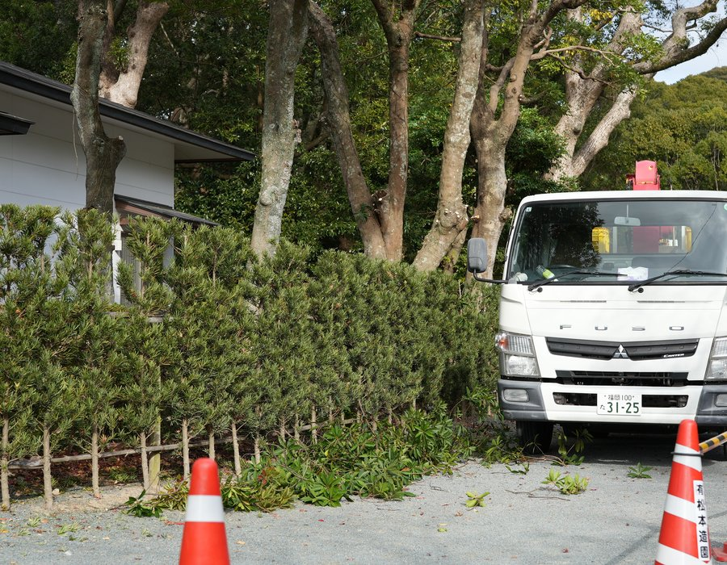
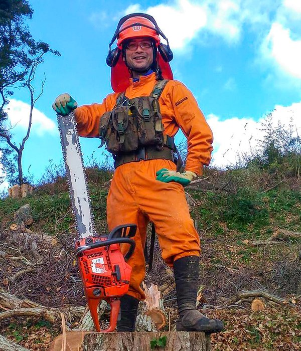

Our Story
松本造園は、宗像市を拠点に造園・剪定・特殊伐採を手がける会社です。創業から半世紀、地域の庭と緑を守り続けてきました。
木は一本一本、育ちが違い、性格が違います。その樹をよく見て、対話しながら仕事をする。そういう職人気質の仕事観が、今も変わらずこの会社の根幹にあります。
手仕事の繊細さと重機・ロープワークを組み合わせた特殊技術、そして地域の方々との長年の信頼関係が、松本造園の強みです。


造園という仕事は、木が好きじゃないとできません。木が好きで、外が好きで、体を動かすことが苦にならない。でもそれだけでは職人にはなれても、経営者にはなれない。
私がこの仕事に関わって30年、今一番考えているのは「次」のことです。松本造園が培ってきた技術と信頼を、次の世代にどう渡すか。それがいまの自分の仕事だと思っています。
10年かけて、一緒に次の松本造園をつくってくれる人を探しています。造園が好きで、経営に関心がある。そういう人と話してみたいと思っています。
代表取締役 進藤 明範
| 会社名 | 有限会社 松本造園 |
|---|---|
| 代表取締役 | 進藤 明範 |
| 所在地 | 福岡県宗像市 |
| 事業内容 | 造園工事・剪定・高木特殊伐採・外構工事・公共緑地管理 |
| 対応エリア | 宗像市・福津市・古賀市・その他福岡県内 |
| note | note.com/matsumoto_363565 |